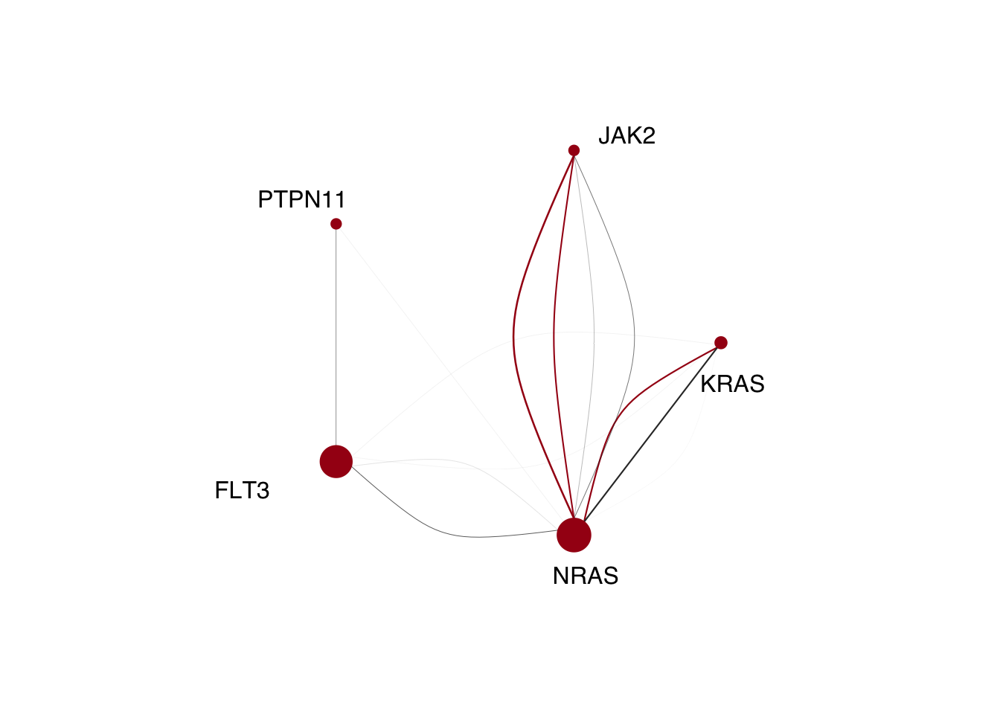

3.2 Figure 2: Clonality
We next wanted to determine if a given gene is likely to be found in the dominant clone or only ib subclones. Of course, nearly all mutations found in the dominant clone were also found in subclones. We attempted to find mutations that were exclusively found in the dominant clone, but did not observe any. This is likely complicated by the fact that many subclones are not the most “genetically dense” clone as explored in Figure 3 of the manuscript. We decided to address that with the markov models described elsewhere, and instead classified a mutation on whether it was present present or absent in the dominant clone.
library(tidyr)
library(dplyr)
library(RColorBrewer)
library(ggplot2)
library(pals)
library(cowplot)
setwd("/Users/bowmanr/Projects/scDNA")
final_sample_summary<-readRDS(file="/Users/bowmanr/Projects/scDNA/data/final_sample_summary.rds")
pheno<-readRDS(file="./data/pheno.rds")
clone_size_by_gene<- do.call(rbind,lapply(names(final_sample_summary),function(x){
# select the clones
clones<-final_sample_summary[[x]]$Clones%>%
dplyr::select(Clone)
# Compute the relative clone size
Clone_size<-final_sample_summary[[x]]$Clones%>%transmute(Clone_size=Count/sum(Count))%>%pull(Clone_size)
names(Clone_size) <- clones[,"Clone"]
# Extract the mutations
mutations <- colnames(final_sample_summary[[x]]$NGT%>%
dplyr::select(!Clone))
# Identify the dominant clone, which is the last one in this data frame
dominant_clone <- clones[nrow(clones),]
# Compute the bulk VAF for each mutation
VAFs <- final_sample_summary[[x]]$NGT%>%
dplyr::select(`mutations`)%>%
summarise_all(funs(mean(.)/2))
# Separate the clone into a deduplicated NGT matrix
mut_mat<-final_sample_summary[[x]]$Clones%>%
dplyr::select(Clone)%>%
separate(col=Clone,into=mutations,sep="_")
# Create a composite data frame and turn it into long form
data.frame(clones,Clone_size,mut_mat,"Sample"=x)%>%
pivot_longer(cols=all_of(mutations),names_to="Variant", values_to="Genotype")%>%
filter(Genotype!=0)%>% # remove WT entries
separate(col=Variant, into="Gene",extra="drop",sep="\\.|_",remove=FALSE)%>% # For later useage in plotting
group_by(Variant)%>%
filter(Clone_size==max(Clone_size))%>% #identify largest clone
mutate(Clonality=case_when(
Clone==`dominant_clone`~"Dominant",
Clone!=`dominant_clone`~"Subclone"))%>% #label clones
inner_join(data.frame("VAF"=t(VAFs),
"Variant"=names(VAFs))) # merge with bulk VAF info
}))
# Tally the number of times a gene is in the dominant and subclone
tally_set<-data.frame(table(clone_size_by_gene$Gene,
clone_size_by_gene$Clonality))%>%
pivot_wider(names_from=Var2,values_from=Freq)%>%
mutate(Ratio=Dominant/(Subclone+Dominant))%>% #calculate the dominant ratio
arrange(Ratio)
# For plotting purposes establish order of the y axis
clone_size_by_gene$Gene <- factor(clone_size_by_gene$Gene, levels=tally_set$Var1)
# Linde and I spent too much time picking the exact shade of red we wanted for this paper....
color_red<-brewer.pal(5,"Reds")[5]
# For plotting purposes establish order of stacked bars
clone_size_by_gene$Clonality<-factor(clone_size_by_gene$Clonality,levels=c("Subclone","Dominant"))
#plot the data
ggA<-ggplot(tally(clone_size_by_gene%>%group_by(Gene,Clonality)),
aes(x=factor(Gene),fill=Clonality,y=n,label=n))+
guides(fill=FALSE,color=FALSE)+
scale_y_continuous( expand = c(0, 0.0))+ #removes white space near the axis of the bars
geom_bar(stat="identity",position="fill")+
xlab("")+coord_flip()+
scale_fill_manual(values=c("Dominant"=color_red,
"Subclone"="grey80"))+
ylab("Fraction of mutant clones \n with mutation in dominant clone")+
theme_bw(base_size=8)+theme(legend.position = "bottom")
ggB<-ggplot(clone_size_by_gene,
aes(y=Clone_size, x=Gene, fill=Gene)) +
geom_boxplot(alpha = 0.5,outlier.shape = NA)+
geom_point(aes(color=Clonality,group=Clonality),
position = position_jitterdodge(), size=0.3)+
scale_fill_manual(values=tol.rainbow(n=length(levels(clone_size_by_gene$Gene))))+
scale_color_manual(values=c("Dominant"=color_red,
"Subclone"="grey20"))+
coord_flip()+
theme_bw(base_size=8)+guides(fill=FALSE,color=FALSE)+
theme(axis.text.y = element_blank(),
axis.ticks.y = element_blank(),
axis.title.y = element_blank())+
scale_y_continuous(limits = c(0,1), expand = c(0, 0.05)) +
ylab("Fraction of cells \n in largest mutant clone")+
theme(legend.position = "bottom")
spacer <- plot_grid(NULL) # plot looks better with a little spacer
plot_grid(ggA,spacer,ggB,align="h",axis="tb",
ncol=3,rel_widths=c(1,0.05,1))Figure 3.6: Miles et al. Figure 2C
3.2.1 Clonality in disease states
We can look at this in a little more resolution on individual genes across disease course.
library(magrittr)
# Incorporate Diagnosis and disease state
clone_size_by_gene_Dx<-inner_join(clone_size_by_gene,pheno)
# We focused on a subset of genes
genes_of_interest <- c("DNMT3A","TET2","ASXL1","IDH1","IDH2",
"JAK2","NRAS","KRAS","FLT3","NPM1")
# We had an interest in DNMT3A R882 point mutants, so we can extract those out
clone_size_by_gene_Dx%<>%mutate(Gene=case_when(
grepl("DNMT3A.p.R882",Variant)~"DNMT3A.p.R882",
TRUE~as.character(Gene)))
clone_size_by_gene_Dx$Dx <- factor(clone_size_by_gene_Dx$Dx,
levels=c("CH","MPN","Other","sAML","tAML","AML"))
mutation_dominance_by_dx<-ggplot(tally(clone_size_by_gene_Dx%>%
filter(Gene%in%c("DNMT3A","TET2","ASXL1",
"DNMT3A.p.R882","IDH1","IDH2"))%>%
group_by(Gene,Dx,Clonality)) ,
aes(x=Dx,fill=Clonality,y=n)) +
facet_wrap(~factor(Gene,
levels=c("DNMT3A","TET2","ASXL1",
"DNMT3A.p.R882","IDH1","IDH2")),ncol=3)+
geom_col(position="fill")+
xlab("")+
scale_fill_manual(values=c("Dominant"=color_red,
"Subclone"="grey80"))+
ylab("Number of samples")+
theme_bw(base_size=10)+
theme(legend.position = "right",
axis.text.x =element_text(angle=30,hjust=1))
mutation_dominance_by_dxFigure 3.7: Clonality by Diagnosis
3.2.2 Clonality in co-mutational groups
We can also look at it across the DTAI /RAS/FLT3 groups we defined in the paper. Here includes a little code from earlier in the tutorial to set up those groups again
mutants_in_each_sample<-do.call(rbind,lapply(names(final_sample_summary),function(x){
y<-colnames(final_sample_summary[[x]]$NGT)
z <- list()
z$Sample <- x
z$DNMT3A <- ifelse(any(grepl("DNMT3A",y)),1,0)
z$TET2 <- ifelse(any(grepl("TET2",y)),1,0)
z$ASXL1 <- ifelse(any(grepl("ASXL1",y)),1,0)
z$IDH <- ifelse(any(grepl("IDH",y)),1,0)
z$FLT3 <- ifelse(any(grepl("FLT3",y)),1,0)
z$KIT <- ifelse(any(grepl("KIT",y)),1,0) # n=1 sample, we put it in the "signalling category"
z$RAS <- ifelse(any(grepl("RAS",y)),1,0)
z$JAK2 <- ifelse(any(grepl("JAK2",y)),1,0)
z$PTPN11 <- ifelse(any(grepl("PTPN11",y)),1,0)
data.frame(t(do.call(rbind,z)))
}))
# Bin into groups based on mutations and disease type
mutants_in_each_sample%<>%mutate(Group=case_when(
(TET2==1|DNMT3A==1|IDH==1|ASXL1==1)&(RAS==0&FLT3==0)~'DTAI',
(TET2==1|DNMT3A==1|IDH==1|ASXL1==1)&((RAS==1&FLT3==0)|
(PTPN11==1&FLT3==0))~'DTAI-RAS',
(TET2==1|DNMT3A==1|IDH==1|ASXL1==1)&(RAS==0&FLT3==1)~'DTAI-FLT3',
(TET2==1|DNMT3A==1|IDH==1|ASXL1==1)&((RAS==1&FLT3==1)|
(PTPN11==1&FLT3==1))~'DTAI-FLT3-RAS',
(TET2==0&DNMT3A==0&IDH==0&ASXL1==0)&(RAS==1|FLT3==1|JAK2==1|KIT==1)~'Signaling'))%>%
left_join(pheno,by="Sample")%>%
mutate(Final_group=case_when(
grepl("AML|Other",Dx)~Group,
!grepl("AML|Other",Dx)~Dx
))
# Order the groups to match how we have them in the paper
mutants_in_each_sample$Final_group <- factor(mutants_in_each_sample$Final_group,
levels=c("CH","MPN","Signaling","DTAI",
"DTAI-RAS","DTAI-FLT3","DTAI-FLT3-RAS"))
# Now merge this with our new data frame defined above
clone_size_by_gene_DTAI<-left_join(clone_size_by_gene_Dx,mutants_in_each_sample,by="Sample")
mutation_dominance_by_DTAI<-ggplot(tally(clone_size_by_gene_DTAI%>%
filter(Gene%in%c("DNMT3A","TET2","ASXL1",
"DNMT3A.p.R882","IDH1","IDH2"))%>%
group_by(Gene,Final_group,Clonality)) ,
aes(x=Final_group,fill=Clonality,y=n)) +
facet_wrap(~factor(Gene,
levels=c("DNMT3A","TET2","ASXL1",
"DNMT3A.p.R882","IDH1","IDH2")),ncol=3)+
geom_col()+
xlab("")+
scale_fill_manual(values=c("Dominant"=color_red,
"Subclone"="grey80"))+
ylab("Number of samples")+
theme_bw(base_size=10)+
theme(legend.position = "right",
axis.text.x =element_text(angle=30,hjust=1))
mutation_dominance_by_DTAIFigure 3.8: Miles et al Extended Figure 3C
3.2.3 Clonality assocation with VAF
We can also look at the VAF of each gene and see if that is associated with dominant vs subclone status for each state of disease, or the grouping we setup in the main figure
library(ggbeeswarm)
pheno<-readRDS(file="./data/pheno.rds")
data_to_plot<-inner_join(clone_size_by_gene,pheno)%>%
filter(as.character(Gene)%in%genes_of_interest &
!Dx%in%c("CH"))%>%
group_by(Gene,Clonality)
summarized_data <-data_to_plot%>%summarise(mean=mean(VAF),
sd = sd(VAF),
sem = sd(VAF)/sqrt(length(VAF)))
clonality_VAF<-ggplot(data_to_plot,aes(x=Clonality,y=VAF,color=Clonality))+
facet_wrap(~factor(Gene,levels=genes_of_interest),
scale="free_x",ncol=5)+
ggbeeswarm::geom_beeswarm()+
geom_errorbar(data=summarized_data,aes(x=Clonality,
y=mean,
ymin=mean-sem,
ymax=mean+sem),
color="black")+
scale_color_manual(values=c("Dominant"=color_red,
"Subclone"="grey50"))+
xlab("")+ ylab("Computed VAF")+
theme_classic()+guides(fill=FALSE)+
theme(axis.ticks.x = element_blank(),
axis.text.x = element_blank())+
scale_y_continuous(limits=c(0,1.1),
breaks=c(0,.25,.5,.75,1),
labels=c("0","0.25","0.50","0.75","1.0"))
clonality_VAFFigure 3.9: Miles et al Extended Figure 3D
Statistics below
library(broom)
clonality_VAF_pvalues<-data.frame(data_to_plot)%>%
filter(as.character(Clonality)%in%c("Dominant","Subclone")&
Gene!="IDH2")%>%
group_by(Gene)%>%
dplyr::select(VAF,Clonality)%>%
do(tidy(t.test(VAF ~ Clonality, data = .)))%>%
dplyr::select(Gene,Dominant_VAF=estimate2,
Subclone_VAF=estimate1,
p.value)%>%
mutate_if(is.numeric, funs(as.character(signif(., 3))))| Gene | Dominant_VAF | Subclone_VAF | p.value |
|---|---|---|---|
| KRAS | 0.387 | 0.0601 | 0.00353 |
| FLT3 | 0.313 | 0.0567 | 7.9e-05 |
| NRAS | 0.41 | 0.0507 | 1.2e-05 |
| TET2 | 0.546 | 0.0756 | 9.37e-17 |
| ASXL1 | 0.445 | 0.109 | 3.43e-05 |
| DNMT3A | 0.481 | 0.124 | 1.06e-09 |
| JAK2 | 0.725 | 0.0936 | 2.05e-07 |
| IDH1 | 0.471 | 0.0673 | 0.000209 |
| NPM1 | 0.465 | 0.278 | 0.0907 |
3.2.4 Co-mutation and clonality
Some of our motivations for this section were: 1) Are epigenetic mutations found in the same cell, if so, are these cells the dominant clone? 2) Are there Tet2 IDH in the same sample, and if so same cell? 3) Are there signaling in the same sample, and if so same cell?
We start off here by laoding the packages of interest, including two new ones “UpSetR” and “tibble.” UpSetR is necessary for some of the barplots we make, while “tibble” is useful for the add_column function.
options(stringsAsFactors = FALSE)
library(UpSetR)
library(tidyr)
library(dplyr)
library(RColorBrewer)
library(ggplot2)
library(pals)
library(cowplot)
library(tibble)
setwd("/Users/bowmanr/Projects/scDNA")
final_sample_summary<-readRDS(file="./data/final_sample_summary.rds")
pheno<-readRDS(file="./data/pheno.rds")Our eventual goal is make an UpSet plot looking at the overlap of the different epigenetic events. We would like to demarcate on this plot whether the different epigenetic hits are in the same clone, with a specific focus on the dominant clone. We’ll start off by determing for each sample whether there is a mutation for the indicated genes.
sample_mutations<-do.call(rbind,lapply(names(final_sample_summary),function(sample){
data.frame("Sample"=sample,
"DNMT3A"=ifelse(any(grepl("DNMT3A",colnames(final_sample_summary[[sample]]$NGT))),1,0),
"TET2"=ifelse(any(grepl("TET2",colnames(final_sample_summary[[sample]]$NGT))),1,0),
"IDH2"=ifelse(any(grepl("IDH2",colnames(final_sample_summary[[sample]]$NGT))),1,0),
"IDH1"=ifelse(any(grepl("IDH1",colnames(final_sample_summary[[sample]]$NGT))),1,0),
"ASXL1"=ifelse(any(grepl("ASXL1",colnames(final_sample_summary[[sample]]$NGT))),1,0),
"FLT3"=ifelse(any(grepl("FLT3",colnames(final_sample_summary[[sample]]$NGT))),1,0),
"JAK2"=ifelse(any(grepl("JAK2",colnames(final_sample_summary[[sample]]$NGT))),1,0),
"NRAS"=ifelse(any(grepl("NRAS",colnames(final_sample_summary[[sample]]$NGT))),1,0),
"KRAS"=ifelse(any(grepl("KRAS",colnames(final_sample_summary[[sample]]$NGT))),1,0),
"PTPN11"=ifelse(any(grepl("PTPN11",colnames(final_sample_summary[[sample]]$NGT))),1,0)
)
}))We will next proceed with this same process on a clone level.
select <- dplyr::select
clone_mutations<-do.call(rbind,lapply(names(final_sample_summary),function(sample){
# select the clones
clones<-final_sample_summary[[sample]]$Clones%>%select(Clone)
# Extract the mutations
mutations <- colnames(final_sample_summary[[sample]]$NGT%>%select(!Clone))
# Separate clones into mutations, identify the mutations in the dominant clone.
# I'm sure there is a more efficient way to do this, but this is what I have.
# This might seem a little redundant with the group ungroup and regroup, but the idea
# is we want to calculate the relative size of each clone in the context of the whole sample
# then identify and remove the WT clone in the rare event it is the dominant clone, or the largest subclone.
# In order to then mark the clones as dominant or subclone, we have to ungroup in order to use the context of the whole sample.
# Lastly, we group again on the Clones and check whether each clone is mutant for the genes of interest.
# We next remove excess columns representing genes and variants and finally remove duplicate rows.
# Previosuly each line of this data frame was a variant, and now it is a clone.
out<-final_sample_summary[[sample]]$Clones%>%
mutate(Clone_size=Count/sum(Count))%>%
dplyr::select(Clone,Clone_size)%>%
separate(col=Clone,
into=mutations,sep="_",
remove=FALSE)%>%
pivot_longer(cols=mutations,
names_to="Variant",
values_to="Genotype")%>%
add_column(Sample=`sample`)%>%
group_by(Clone)%>%
mutate(WT=ifelse(all(Genotype==0),1,0))%>%
filter(WT==0)%>%
filter(Genotype!=0)%>%
ungroup()%>%
mutate(Clonality=ifelse(Clone_size==max(Clone_size),
"Dominant","Subclone"))%>%
group_by(Clone)%>%
mutate(Gene=do.call(rbind,strsplit(Variant,"[\\._]"))[,1])%>%
mutate(DNMT3A=ifelse(any(Gene%in%"DNMT3A"),1,0),
TET2=ifelse(any(Gene%in%"TET2"),1,0),
ASXL1=ifelse(any(Gene%in%"ASXL1"),1,0),
IDH1=ifelse(any(Gene%in%"IDH1"),1,0),
IDH2=ifelse(any(Gene%in%"IDH2"),1,0),
FLT3=ifelse(any(Gene%in%"FLT3"),1,0),
NRAS=ifelse(any(Gene%in%"NRAS"),1,0),
KRAS=ifelse(any(Gene%in%"KRAS"),1,0),
PTPN11=ifelse(any(Gene%in%"PTPN11"),1,0),
JAK2=ifelse(any(Gene%in%"JAK2"),1,0))%>%
ungroup()%>%
dplyr::select(!c(Variant,Genotype,Gene))%>%
distinct()
}))Now to check to see if the mutations found in the sample are in the dominant clone. The UpSetR package is great, the queries part was a little non intuitive for me at first glance, however Vignette cleared it up and is worth a read.
# Identify genes of interest
DTAI_genes<- c("DNMT3A","TET2","IDH2","IDH1","ASXL1")
# Subset data.frame above to only the dominant clones
dominant_clone_mutations <- clone_mutations%>%filter(Clonality=="Dominant")
# For each sample, determine if the dominant clone
sample_mutations$Match<-ifelse(sapply(sample_mutations$Sample,function(sample) {
all(sample_mutations%>%
filter(Sample==sample)%>%
select(all_of(DTAI_genes))==
dominant_clone_mutations%>%
filter(Sample==sample)%>%
select(all_of(DTAI_genes)))
}) ,"Match","Absent")
# Join this match with the phenotype data to pick a disease state of interest
test_set<-left_join(sample_mutations,pheno,by="Sample")
# Necessary little function to
Myfunc <- function(row,feature) {
data <- (row[feature]=="Match")
}
# Slight difference from BioRxiv paper due to a misclassification of one TET2 mutant CMML sample as AML.
AML<-upset(test_set%>%filter(grepl("AML",Dx)),
sets=DTAI_genes,
order.by = c("degree"),
main.bar.color = "grey60",decreasing=FALSE,
mainbar.y.label = "Number of samples",
sets.x.label = "Number of \n mutant samples",
text.scale=1.25,
shade.alpha = 0.75,
show.numbers=FALSE,
mb.ratio = c(0.6, 0.4),
queries=list(list(query = Myfunc,
params = list("Match"),
color = brewer.pal(5,"Reds")[5],
active = TRUE )))
AMLFigure 3.10: Miles et al Figure 2D
And now for CH only
CH<-upset(test_set%>%filter(Dx=="CH"), sets=DTAI_genes,order.by = c("degree"),
main.bar.color = "grey60",decreasing=FALSE,
mainbar.y.label = "Number of samples",
sets.x.label = "Number of \n mutant samples",
text.scale=1.25,
shade.alpha = 0.75,
show.numbers=FALSE,
queries=list(list(query = Myfunc, params = list("Match"), color = brewer.pal(5,"Reds")[5], active = TRUE )))
CHFigure 3.11: Miles et al, Extended Figure 3F
The above plots looks nice and are worth looking at for a host of genes. The signalling effectors are quite interesting. In this setting you can see that when a sample harbors multiple signaling effectors, they are rarely in the dominant clone, unlike the epigenetic mutations above. If you want to edit this to evaluate a gene of interest, you need to go back to the beginning here and add the columns back into the “sample_mutations” and “dominant_clone_mutations” variables.
# Identify genes of interest
genes<- c("FLT3","NRAS","JAK2","KRAS","PTPN11")
# Subset data.frame above to only the dominant clones
dominant_clone_mutations <- clone_mutations%>%filter(Clonality=="Dominant")
# For each sample, determine if the dominant clone
sample_mutations$Match<-ifelse(sapply(sample_mutations$Sample,function(sample) {
all(sample_mutations%>%
filter(Sample==sample)%>%
select(all_of(genes))==
dominant_clone_mutations%>%
filter(Sample==sample)%>%
select(all_of(genes)))
}) ,"Match","Absent")
# Join this match with the phenotype data to pick a disease state of interest
test_set<-left_join(sample_mutations,pheno,by="Sample")
# Necessary little function to
Myfunc <- function(row,feature) {
data <- (row[feature]=="Match")
}
# Slight difference from BioRxiv paper due to a misclassification of one TET2 mutant CMML sample as AML.
AML_signaling_genes<-upset(test_set%>%filter(grepl("AML",Dx)),
sets=genes,
order.by = c("degree"),
main.bar.color = "grey60",decreasing=FALSE,
mainbar.y.label = "Number of samples",
sets.x.label = "Number of \n mutant samples",
text.scale=1.25,
shade.alpha = 0.75,
show.numbers=FALSE,
mb.ratio = c(0.6, 0.4),
queries=list(list(query = Myfunc,
params = list("Match"),
color = brewer.pal(5,"Reds")[5],
active = TRUE )))
AML_signaling_genesFigure 3.12: Not shown in Miles et
We wanted to visualize this data another way, and gain more resolution into multi-mutant subclones. In order to do this we generated graph structures using the igraph package. We decided to focus specifically on mutli mutant DTAI or multi mutant signaling AMLs.
library(igraph)
# identify sample with at least 2 DTAI mutationss
multi_DTAI<-test_set%>%filter(grepl("AML",Dx))%>%
filter((ASXL1+DNMT3A+TET2+IDH1+IDH2)>=2)%>%
distinct(Sample)%>%pull(Sample)
# Identify dominant clones
DTAI_dominant_clones<-clone_mutations%>%filter(Sample%in%multi_DTAI)%>%
filter(Clonality=="Dominant")%>%
select(Clone,Clone_size,Sample,DNMT3A,TET2,ASXL1,IDH1,IDH2)%>%
pivot_longer(cols=c(DNMT3A,TET2,ASXL1,IDH1,IDH2),
names_to="Gene",values_to="Mutated")%>%
filter(Mutated==1)
# Now we want to know which variants are in the dominant clone, and the size of that clone.
# I'm sure there is a nice way to do this in dplyr, grouping on sample, but I couldn't figure it out
# so we will use lapply.
genes_in_each_dominant_clone<- do.call(rbind,setNames(lapply(multi_DTAI,function(x){
# Extract the genes
dominant_variants<- DTAI_dominant_clones%>%filter(Sample==x)%>%pull(Gene)
# Extract the clone size
dominant_clone_size<- DTAI_dominant_clones%>%filter(Sample==x)%>%pull(Clone_size)
# if there are more than two DTAI variants in the dominant clone make a combinatorial edgelist
if(length(dominant_variants)>=2){
return(setNames(data.frame(t(combn(dominant_variants,2)),dominant_clone_size,"Dominant"),c("to","from","size","Clonality")))}
# if there is only 1 mutant in the dominant clone, list it for now so we can count the mutation,
# but we will eventually filter it out
else if(length(dominant_variants)==1){
return(setNames(data.frame(t(c(dominant_variants,dominant_variants)),dominant_clone_size,"Subclone"),c("to","from","size","Clonality")))}
# if no DTAI mutants in the dominant clone, ignore.
else if(length(dominant_variants)==0){
NULL
}
}),multi_DTAI))%>%distinct()
# Now we will go for a similar process with subclones.
DTAI_sub_clones<-clone_mutations%>%filter(Sample%in%multi_DTAI)%>%
filter(Clonality!="Dominant")%>%
select(Clone,Clone_size,Sample,DNMT3A,TET2,ASXL1,IDH1,IDH2)%>%
pivot_longer(cols=c(DNMT3A,TET2,ASXL1,IDH1,IDH2),
names_to="Gene",values_to="Mutated")%>%
filter(Mutated==1)%>%
# This is how we specifically select multi mutant subclone
group_by(Clone,Sample)%>%
add_tally()%>%filter(n>1)%>%
ungroup()
# Same process as above, but note that we decided to only plot the largest multi mutant clone.
# Try getting rid of this and seeing how it looks.
genes_in_each_subclone <- do.call(rbind,setNames(lapply(multi_DTAI,function(x){
subclone_variants <- DTAI_sub_clones%>%filter(Sample==x)%>%
filter(Clone_size==max(Clone_size))%>%
pull(Gene)
subclone_size <- DTAI_sub_clones%>%filter(Sample==x)%>%
filter(Clone_size==max(Clone_size))%>%
pull(Clone_size)
if(length(subclone_variants)>=2){
return(setNames(data.frame(t(combn(rev(subclone_variants),2)),subclone_size,"Subclone"),c("to","from","size","Clonality")))}
else if(length(subclone_variants)==1){
return(setNames(data.frame(t(c(subclone_variants,subclone_variants)),subclone_size,"Subclone"),c("to","from","size","Clonality")))}
else if(length(subclone_variants)==0){
NULL
}
}),multi_DTAI))%>%distinct()
# Now bind these two dataframe together
final_set<- rbind(genes_in_each_dominant_clone,genes_in_each_subclone)
# And remove the edges that are self referencing. We preserve the input variable so we can represent
# the vertex size in relation to total mutation burden in this subset of patients.
final_set_filtered <-final_set%>%filter(to!=from)
graph<-graph_from_data_frame(final_set_filtered,directed=F)%>%
set_edge_attr("weight", value = as.numeric(final_set_filtered%>%pull(size))*3) %>%
set_edge_attr("color", value = ifelse(final_set_filtered%>%
pull(Clonality)=="Dominant",
brewer.pal(5,"Reds")[5],"grey20"))
mutant_counts<-table(c(as.character(final_set$to),as.character(final_set$from)))[names(V(graph))]
scaled_mutant_counts <-mutant_counts/sum(mutant_counts)*50
radian.rescale <- function(x, start=0, direction=1) {
c.rotate <- function(x) (x + start) %% (2 * pi) * direction
c.rotate(scales::rescale(x, c(0, 2 * pi), range(x)))
}
lab.locs <- radian.rescale(x=1:5, direction=-1, start=5)
lab.locs[3]<- -2.5The permute function below, and the indexing of the vertex.size is only to preserve the order that is present in the manuscript. When I recoded everything, the order of the mutations changed in the data frame and inverted the graph.
reordered_graph<-igraph::permute(graph,c(4,3,2,1,5))
plot.igraph(reordered_graph,
edge.width = E(reordered_graph)$weight,
vertex.color=brewer.pal(5,"Reds")[5],
vertex.frame.color=brewer.pal(5,"Reds")[5],
vertex.size=scaled_mutant_counts[names(V(reordered_graph))],
vertex.label.family="Helvetica",
vertex.label.color="black",
vertex.label.degree=lab.locs,
vertex.label.dist=c(3,4,3,7,3),
layout=layout_in_circle)Figure 3.13: Miles et al Figure 2E
Now for the signalling genes. Everything is the exactly the same as above, so I’ve skipped commenting it unless where necessary. The graph looks a little different here than the BioRxiv manuscript due to a sample diagnosis being incorrect previously.
multi_signaling<-test_set%>%filter(grepl("AML",Dx))%>%
filter((FLT3+JAK2+NRAS+KRAS+PTPN11)>=2)%>%
distinct(Sample)%>%pull(Sample)
signaling_dominant_clones<-clone_mutations%>%filter(Sample%in%multi_signaling)%>%
filter(Clonality=="Dominant")%>%
select(Clone_size,Sample,FLT3,JAK2,NRAS,KRAS,PTPN11)%>%
pivot_longer(cols=c(FLT3,JAK2,NRAS,KRAS,PTPN11),
names_to="Gene",values_to="Mutated")%>%
filter(Mutated==1)
genes_in_each_dominant_clone<- do.call(rbind,setNames(lapply(multi_signaling,function(x){
dominant_variants<- signaling_dominant_clones%>%filter(Sample==x)%>%pull(Gene)
dominant_clone_size<- signaling_dominant_clones%>%filter(Sample==x)%>%pull(Clone_size)
if(length(dominant_variants)>=2){
return(setNames(data.frame(t(combn((dominant_variants),2)),dominant_clone_size,"Dominant"),c("to","from","size","Clonality")))}
else if(length(dominant_variants)==1){
return(setNames(data.frame(t(c(dominant_variants,dominant_variants)),dominant_clone_size,"Subclone"),c("to","from","size","Clonality")))}
else if(length(dominant_variants)==0){
NULL
}
}),multi_signaling))%>%distinct()
signaling_sub_clones<-clone_mutations%>%filter(Sample%in%multi_signaling)%>%
filter(Clonality!="Dominant")%>%
select(Clone,Clone_size,Sample,FLT3,JAK2,NRAS,KRAS,PTPN11)%>%
pivot_longer(cols=c(FLT3,JAK2,NRAS,KRAS,PTPN11),
names_to="Gene",values_to="Mutated")%>%
filter(Mutated==1)%>%
group_by(Clone,Sample)%>%
add_tally()%>%filter(n>1)%>%
ungroup()
genes_in_each_subclone<- do.call(rbind,setNames(lapply(multi_signaling,function(x){
subclone_variants<- signaling_sub_clones%>%filter(Sample==x)%>%
filter(Clone_size==max(Clone_size))%>%pull(Gene)
subclone_size<- signaling_sub_clones%>%filter(Sample==x)%>%
filter(Clone_size==max(Clone_size))%>%pull(Clone_size)
if(length(subclone_variants)>=2){
return(setNames(data.frame(t(combn((subclone_variants),2)),subclone_size,"Subclone"),c("to","from","size","Clonality")))}
else if(length(subclone_variants)==1){
return(setNames(data.frame(t(c(subclone_variants,subclone_variants)),subclone_size,"Subclone"),c("to","from","size","Clonality")))}
else if(length(subclone_variants)==0){
NULL
}
}),multi_signaling))%>%distinct()## Warning in max(Clone_size): no non-missing arguments to max; returning -Inf
## Warning in max(Clone_size): no non-missing arguments to max; returning -Inf
## Warning in max(Clone_size): no non-missing arguments to max; returning -Inf
## Warning in max(Clone_size): no non-missing arguments to max; returning -Inf
## Warning in max(Clone_size): no non-missing arguments to max; returning -Inf
## Warning in max(Clone_size): no non-missing arguments to max; returning -Inf
## Warning in max(Clone_size): no non-missing arguments to max; returning -Inf
## Warning in max(Clone_size): no non-missing arguments to max; returning -Inf
## Warning in max(Clone_size): no non-missing arguments to max; returning -Inf
## Warning in max(Clone_size): no non-missing arguments to max; returning -Inf
## Warning in max(Clone_size): no non-missing arguments to max; returning -Inf
## Warning in max(Clone_size): no non-missing arguments to max; returning -Inf
## Warning in max(Clone_size): no non-missing arguments to max; returning -Inf
## Warning in max(Clone_size): no non-missing arguments to max; returning -Inf
## Warning in max(Clone_size): no non-missing arguments to max; returning -Inf
## Warning in max(Clone_size): no non-missing arguments to max; returning -Inf
## Warning in max(Clone_size): no non-missing arguments to max; returning -Inf
## Warning in max(Clone_size): no non-missing arguments to max; returning -Inf
## Warning in max(Clone_size): no non-missing arguments to max; returning -Inf
## Warning in max(Clone_size): no non-missing arguments to max; returning -Inf
## Warning in max(Clone_size): no non-missing arguments to max; returning -Inf
## Warning in max(Clone_size): no non-missing arguments to max; returning -Inf
## Warning in max(Clone_size): no non-missing arguments to max; returning -Inf
## Warning in max(Clone_size): no non-missing arguments to max; returning -Inf
## Warning in max(Clone_size): no non-missing arguments to max; returning -Inf
## Warning in max(Clone_size): no non-missing arguments to max; returning -Inf
## Warning in max(Clone_size): no non-missing arguments to max; returning -Inf
## Warning in max(Clone_size): no non-missing arguments to max; returning -Inffinal_set<- rbind(genes_in_each_dominant_clone,genes_in_each_subclone)
final_set_filtered <-final_set%>%filter(to!=from)
graph<-graph_from_data_frame(final_set_filtered,directed=F)%>%
set_edge_attr("weight", value = as.numeric(final_set_filtered%>%pull(size))*3) %>%
set_edge_attr("color", value = ifelse(final_set_filtered%>%
pull(Clonality)=="Dominant",
brewer.pal(5,"Reds")[5],"grey20"))
mutant_counts<-table(c(as.character(final_set$to),as.character(final_set$from)))[names(V(graph))]
scaled_mutant_counts <-mutant_counts/sum(mutant_counts)*50
radian.rescale <- function(x, start=0, direction=1) {
c.rotate <- function(x) (x + start) %% (2 * pi) * direction
c.rotate(scales::rescale(x, c(0, 2 * pi), range(x)))
}
lab.locs <- radian.rescale(x=1:5, direction=-1, start=5)
lab.locs[3]<- -2.5reordered_graph<-igraph::permute(graph,c(5,2,4,1,3))
plot.igraph(reordered_graph,
edge.width = E(reordered_graph)$weight,
vertex.color=brewer.pal(5,"Reds")[5],
vertex.frame.color=brewer.pal(5,"Reds")[5],
vertex.size=scaled_mutant_counts[names(V(reordered_graph))],
vertex.label.family="Helvetica",
vertex.label.color="black",
vertex.label.degree=lab.locs,
vertex.label.dist=c(3,4,3,7,3),
layout=layout_in_circle)
For the last part, we wanted to dial in on DNMT3A and IDH mutant leukemias to see if there were distinct co mutants between DNMT3A, IDH1, IDH2 and combinatorial mutant samples. This plot is interesting, and we looked at it many different ways including on the sample level as depicted in the preprint, and on the completely clonal level below. I’ll show the sample level as well to demonstrate the difference in data.
# Add a column for whether a clone contains 2 signaling mutations (as demonstrated above)
clone_mutations_added<-clone_mutations%>%inner_join(pheno,by="Sample")%>%
rowwise()%>%
add_column(signal2=ifelse(c(.$FLT3+.$JAK2+.$NRAS+.$KRAS+.$PTPN11)>=2,1,0))%>%
ungroup()
gene_sets<-list("DNMT3A"="DNMT3A",
"DNMT3A IDH1"=c("DNMT3A","IDH1"),
"DNMT3A IDH2"=c("DNMT3A","IDH2"),
"IDH1"="IDH1",
"IDH2"="IDH2")
comutant_status<-do.call(rbind,setNames(lapply(gene_sets, function(genes){
epi_to_exclude <- setdiff(c("DNMT3A","TET2","ASXL1","IDH1","IDH2"),genes)
clone_subset<- clone_mutations_added%>%filter(Dx=="AML")%>%
filter_at(vars(all_of(epi_to_exclude)),all_vars(.==0))%>%
filter_at(vars(all_of(genes)), all_vars(.==1))%>%
select(c(Sample,all_of(genes),FLT3,JAK2,NRAS,KRAS,PTPN11,signal2))
data.frame("Group" =paste(genes,sep=" ",collapse = " "),
"Total" =clone_subset%>%add_tally(name="Count")%>%pull(Count),
"FLT3" =clone_subset%>%filter(signal2==0)%>%tally(FLT3) %>%pull(n),
"PTPN11" =clone_subset%>%filter(signal2==0)%>%tally(PTPN11)%>%pull(n),
"JAK2" =clone_subset%>%filter(signal2==0)%>%tally(JAK2) %>%pull(n),
"KRAS" =clone_subset%>%filter(signal2==0)%>%tally(KRAS) %>%pull(n),
"NRAS" =clone_subset%>%filter(signal2==0)%>%tally(NRAS) %>%pull(n),
"Multiple mutants"=clone_subset%>%tally(signal2)%>%pull(n),
"None" =clone_subset%>%
add_column(None=ifelse(c(.$FLT3+.$JAK2+
.$NRAS+.$KRAS+
.$PTPN11)==0,1,0))%>%
tally(None)%>%pull(n))
}),names(gene_sets)))
final<-comutant_status%>%
dplyr::select(!Total)%>%
pivot_longer(cols=c(FLT3,PTPN11,JAK2,KRAS,
NRAS,Multiple.mutants,None),
names_to="Mutation",
values_to="Count")
final$Mutation <- gsub("Multiple.mutants","Multiple mutants",final$Mutation)
final$Mutation <- factor(final$Mutation,
levels=rev(c("JAK2","PTPN11","NRAS","KRAS","FLT3","Multiple mutants","None")))
final$Group <- factor(final$Group,
levels=rev(c("IDH1","DNMT3A IDH1","DNMT3A","DNMT3A IDH2","IDH2")))
color_set<-rev(brewer.pal(9,"Set1")[c(1,8,2,3,4,5,9)])
gg_co_mutants<-ggplot(final, aes(x=Group,fill=Mutation,y=Count))+
geom_col(position="fill")+theme_classic(base_size=12)+
ylab("Fraction of clones")+ xlab("")+coord_flip()+
scale_y_continuous(expand=c(0,0))+
ggtitle("Clone level data")+
theme(plot.title = element_text(hjust=0.5))+
scale_fill_manual(values=color_set,"Co mutation",
guide = guide_legend(reverse = TRUE))Now the same thing below but starting with the sample based mutation matrix we used for the UpSet plots.
# Add a column for whether a clone contains 2 signaling mutations (as demonstrated above)
sample_mutations_added<-sample_mutations%>%
inner_join(pheno,by="Sample")%>%
rowwise()%>%
add_column(signal2=ifelse(c(.$FLT3+.$JAK2+
.$NRAS+.$KRAS+.$PTPN11)>=2,1,0))%>%
ungroup()
gene_sets<-list("DNMT3A"="DNMT3A",
"DNMT3A IDH1"=c("DNMT3A","IDH1"),
"DNMT3A IDH2"=c("DNMT3A","IDH2"),
"IDH1"="IDH1",
"IDH2"="IDH2")
comutant_sample_status<-do.call(rbind,setNames(lapply(gene_sets, function(genes){
epi_to_exclude <- setdiff(c("DNMT3A","TET2","ASXL1","IDH1","IDH2"),genes)
sample_subset<- sample_mutations_added%>%
filter(Dx=="AML")%>%
filter_at(vars(all_of(epi_to_exclude)),all_vars(.==0))%>%
filter_at(vars(all_of(genes)), all_vars(.==1))%>%
select(c(Sample,all_of(genes),FLT3,JAK2,NRAS,
KRAS,PTPN11,signal2))
data.frame("Group" =paste(genes,sep=" ",collapse = " "),
"Total" =sample_subset%>%add_tally(name="Count")%>%pull(Count),
"FLT3" =sample_subset%>%filter(signal2==0)%>%tally(FLT3) %>%pull(n),
"PTPN11" =sample_subset%>%filter(signal2==0)%>%tally(PTPN11)%>%pull(n),
"JAK2" =sample_subset%>%filter(signal2==0)%>%tally(JAK2) %>%pull(n),
"KRAS" =sample_subset%>%filter(signal2==0)%>%tally(KRAS) %>%pull(n),
"NRAS" =sample_subset%>%filter(signal2==0)%>%tally(NRAS) %>%pull(n),
"Multiple mutants"=sample_subset%>%tally(signal2)%>%pull(n),
"None" =sample_subset%>%
add_column(None=ifelse(c(.$FLT3+.$JAK2+
.$NRAS+.$KRAS+
.$PTPN11)==0,1,0))%>%
tally(None)%>%pull(n))
}),names(gene_sets)))
final<-comutant_sample_status%>%select(!Total)%>%
pivot_longer(cols=c(FLT3,PTPN11,JAK2,KRAS,NRAS,Multiple.mutants,None),
names_to="Mutation",
values_to="Count")
final$Mutation <- gsub("Multiple.mutants","Multiple mutants",final$Mutation)
final$Mutation <- factor(final$Mutation,
levels=rev(c("JAK2","PTPN11","NRAS","KRAS","FLT3","Multiple mutants","None")))
final$Group <- factor(final$Group,
levels=rev(c("IDH1","DNMT3A IDH1","DNMT3A","DNMT3A IDH2","IDH2")))
color_set<-rev(brewer.pal(9,"Set1")[c(1,8,2,3,4,5,9)])
gg_co_mutants_sample<-ggplot(final, aes(x=Group,fill=Mutation,y=Count))+
geom_col(position="fill")+theme_classic(base_size=12)+
ylab("Fraction of Samples")+ xlab("")+coord_flip()+
scale_y_continuous(expand=c(0,0))+
ggtitle("Sample level data")+
theme(plot.title = element_text(hjust=0.5))+
scale_fill_manual(values=color_set,"Co mutation",
guide = guide_legend(reverse = TRUE))plot_grid(gg_co_mutants,gg_co_mutants_sample,ncol=1)Figure 3.14: Miles et al Figure 2G
This is one of the very last pieces we wanted to address. As you can see, we observe an ability of epigenetic modifications to synergize and persist in the dominant clone, while signaling mutations appear to be mututally exclusive. We wanted to determine clones that harbor 2+ epigenetic modifiers were larger than clones that harbored 2+ siganling mutations. To investigate the clone size directly, we focused on a subset of samples that were mutated for both DNMT3A and IDH1/2 as well as harboring multiple mutations in RAS/FLT3/PTPN11.
detach("package:plyranges")
# Run back the patients we looked at in the network plots
patients_of_interest <- sample_mutations_added%>%filter(DNMT3A==1&signal2==1&
(IDH1==1|IDH2==1))%>%
pull(Sample)
dual_mutation_fractions<-do.call(rbind,setNames(lapply(patients_of_interest,function(sample){
# Extract the genotype matrix for each patient
NGT<-final_sample_summary[[sample]]$NGT%>%select(!Clone)
# Simplfy the matrix to mutant vs non mutant cells.
NGT[NGT>0] <-1
# Extract the mutations of interest
data.frame("Sample"=sample,
"Epigenetic"=NGT%>%select_if(grepl("DNMT3A|IDH",names(.)))%>%
mutate(dual_epi=rowSums(.))%>%
dplyr::summarise(Epigenetic=sum(dual_epi>=2)/n()),
"Signaling"=NGT%>%select_if(grepl("FLT3|RAS|JAK2|PTPN11",names(.)))%>%
mutate(dual_signaling=rowSums(.))%>%
dplyr::summarise(Signaling=sum(dual_signaling>=2)/n()))
}),patients_of_interest))
# Plot the data
gg_fraction_comutated_cells<-ggplot(dual_mutation_fractions%>%pivot_longer(cols=!Sample,
names_to="Group",
values_to = "Fraction"),
aes(x=Group,y=Fraction,fill=Group))+
geom_boxplot()+
geom_jitter(width=0.1)+
theme_classic(base_size=12)+
scale_fill_brewer(type="qual",palette = "Set1","Mutation pairs")+
xlab("")+ylab("Fraction of co-mutated cells")
gg_fraction_comutated_cellsFigure 3.15: Miles et al Extended Figure 3G
### need to clean this up with tidy at some point
dual_mutation_fractions_melted<-dual_mutation_fractions%>%pivot_longer(cols=!Sample,
names_to="Group",
values_to = "Fraction")
t.test(dual_mutation_fractions_melted$Fraction~factor(dual_mutation_fractions_melted$Group))##
## Welch Two Sample t-test
##
## data: dual_mutation_fractions_melted$Fraction by factor(dual_mutation_fractions_melted$Group)
## t = 4.665, df = 6.132, p-value = 0.003259
## alternative hypothesis: true difference in means is not equal to 0
## 95 percent confidence interval:
## 0.3011350 0.9583285
## sample estimates:
## mean in group Epigenetic mean in group Signaling
## 0.9016239 0.2718921